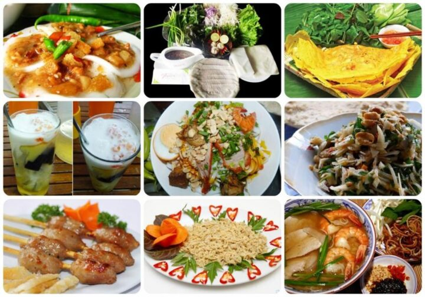
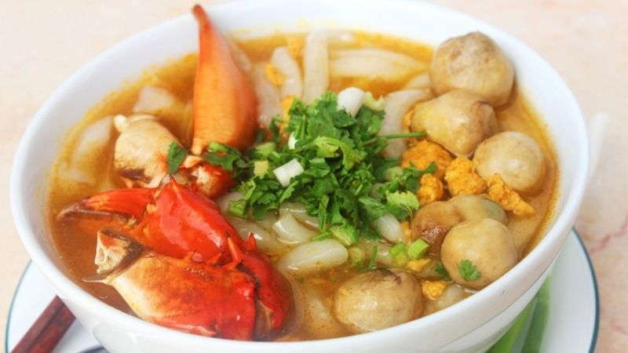
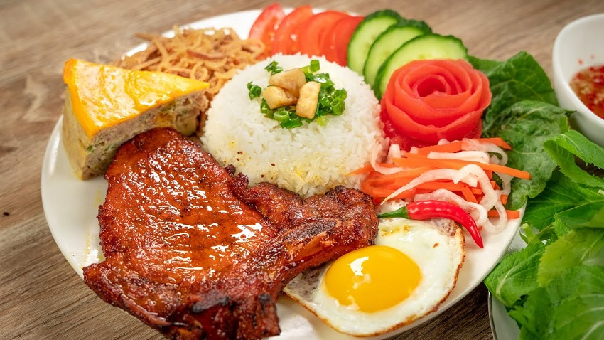
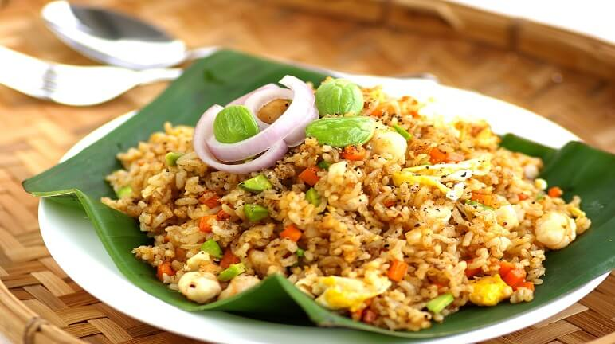
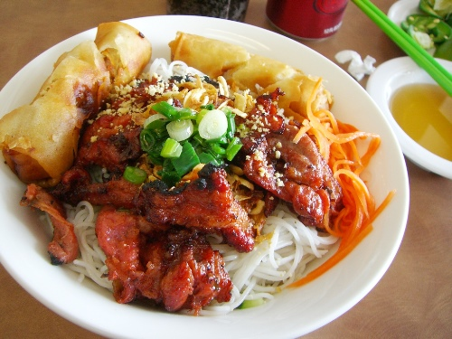
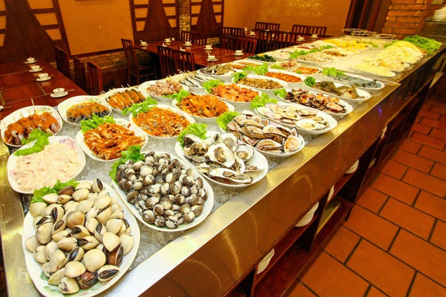
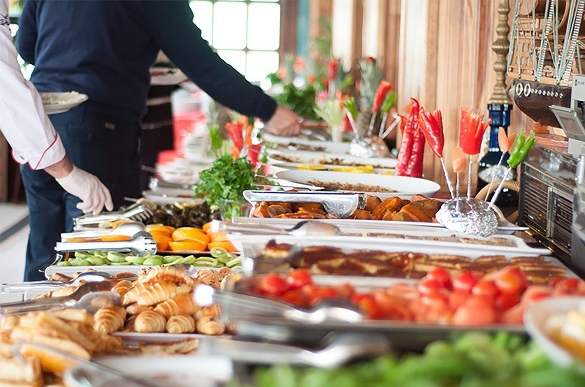
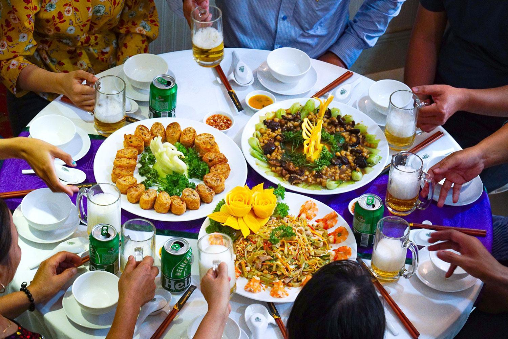

Đặc sản miền Tây là những món ăn dân dã vừa ngon, vừa lạ. Một thiên đường ẩm thực tại miền Tây Nam Bộ luôn là điều thôi thúc du khách đến tham quan và trải nghiệm nơi đây.
Ẩm thực không đơn thuần chỉ là các món ăn mà còn là nền đặc trưng của mỗi đất nước. Việt Nam cũng vậy, các món ăn mang đậm hương vị quê nhà nhưng không kém phần thơm ngon, đặc sắc. Theo chân ReviewNao cùng điểm qua top 9 món ăn Việt Nam nhắc đến là ai cũng biết.





- Đặt tiệc buffet tại nhà hay tại công ty, Miền tây Food luôn có đa dạng các loại thực đơn buffet hấp dẫn với những món ăn khác nhau, linh động trong các mức giá riêng để khách hàng chọn lựa phụ hợp nhất với điều kiện kinh tế của mình.
- Đặt tiệc buffet giá rẻ không đồng nghĩa với dịch vụ không tốt. Miền tây Food luôn muốn mang đến cho người dùng những trải nghiệm hoàn hảo nhất với những mức giá và các chương trình khuyến mãi hấp dẫn nhất. Và đặc biệt là chất lượng của bữa tiệc vẫn phải luôn được đảm bảo chất lượng từ món ăn và dụng cụ.


- “Giá trị cao nhưng không đồng nghĩa giá cả cao” . Tại Miền tây Food, bạn không phải quá e ngại đến mức giá bạn phải chi trả nếu thấy món ăn quá đẳng cấp. Như chúng tôi luôn nói, món ăn là “linh hồn”, là điểm nhấn ấn tượng sắc nét, thể hiện sự đẳng cấp trong phong cách chế biến khi đó chỉ là những nguyên liệu thân quen, dễ tìm mà không phải nhất thiết là sơn hào hải vị. Vì vậy, đảm bảo một mức giá hợp lý luôn khiến bạn bất ngờ!

Email : MienTayFood@gmail.com
Address: 10 Dien Bien Phu Binh Thanh District, HCMC